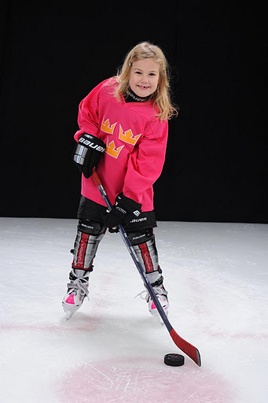
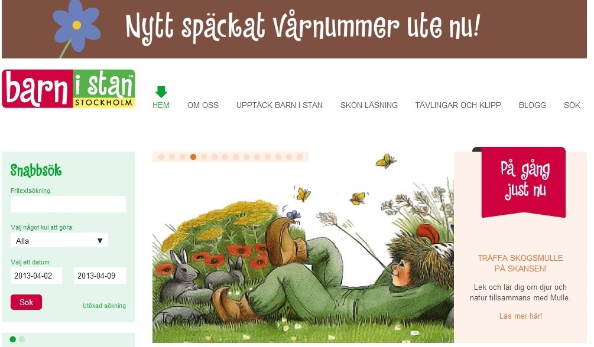
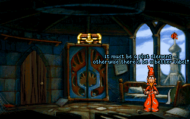
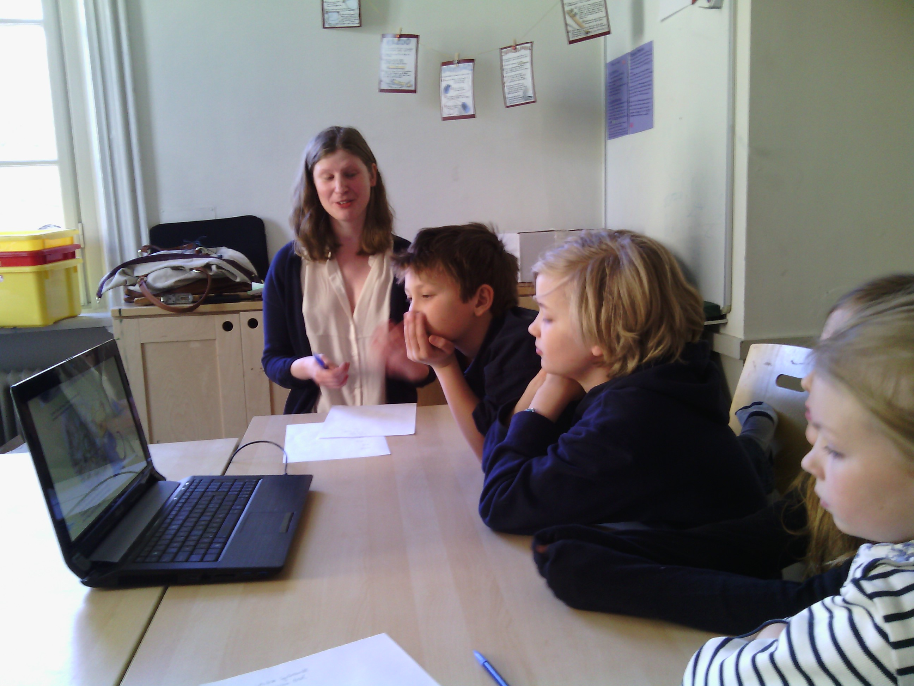
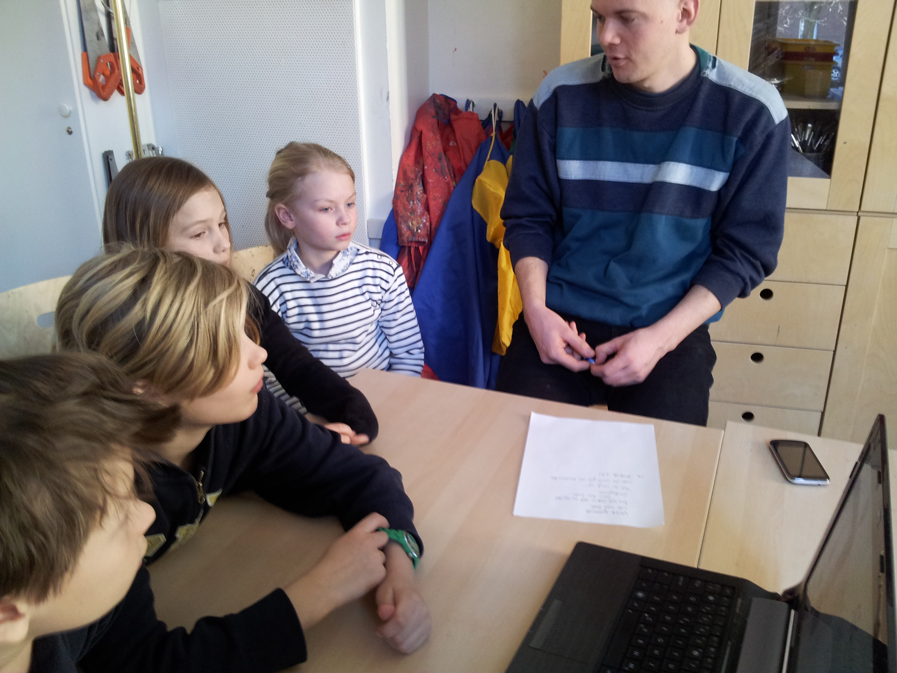

Idéns uppkomst
 Uppgiften vi fick var att ta fram en prototyp på valfri teknisk produkt riktad till Stockholms turister.
Uppgiften vi fick var att ta fram en prototyp på valfri teknisk produkt riktad till Stockholms turister.
En inledande brainstormning syftade till att på oväntade sätt kombinera olika användargrupper med olika tänkbara behov hos turister. På post-it lapparna stod mycket av det man kan vänta - budgetguiden för backpackern, pubguiden för studenten och reseplaneraren för alla... Allt det där som redan är gjort.
Men det var i pusslandet med dessa mediokra post-it lappar som det fanns två som skulle väcka de första idéerna till Stockholm Shards.
- Hur skulle en reseplanerare för barn se ut?
Frågan väckte fler frågor, Vill barn planera resor? Är barn med och planerar resor? Hur är det att turista i Stockholm som barn?
Vi insåg att frågorna var många, men idén kändes spännande att följa upp. Alla i gruppen hade egna minnen av att resa som barn. Självklart hade resor varit något man såg fram emot men inte sällan var reseplaneringen en kompromiss mellan "barnaktiviteter" och "vuxenaktiviteter". Om det blev en dag på Skansen blev det också en dag med Nationalmuseum och stadsvandring. Timmen med stadsvandring kunde kännas oändligt lång och fylld av gatstensmönster men ibland kunde den också överraska. Under en italienresa hade en av oss vilt protesterat mot ännu en dag i en “fin gammal stad", ingen hade förklarat att dagen i Pompeji skulle ge möjlighet att verkligen få gå runt i en utgrävd stad som i nära två tusen år legat begrav under lava.
Vi fann att gemensamt för vår upplevelser var just bristen på förförståelse. Den förförståelse som behövs vid planeringen av en resa, och den förförståelse som gör att vi idag uppskattar många av de museum vi skulle avskytt som barn.
Visst vore det häftigt om en app skulle kunna inspirera barn att vilja upptäcka mer av Stockholm än Gröna Lund och Skansen. En app som även gör det roligt att vara på museum främst riktade till vuxna.
Personan
Intervjuer
För att lära känna vår användargrupp genomförde vi tio intervjuer med barn i åldrarna 9-11 år. Vi intervjuade även åtta föräldrar med barn i målgruppen och museipersonal för att få en bild av hur en Stockholmsresa med barn kan se ut. Från intervjuerna med föräldrar och barn såg vi att resorna ofta blev en trade-off mellan barnens och de vuxnas intressen. Hur mycket planering som skedde i förväg skilde sig åt hos de olika familjerna, men gemensamt för de föräldrar vi intervjuade var att man satsade på “säkra kort”, som ett besök på Gröna Lund. Att hitta aktiviteter som både barn och föräldrar tyckte var roliga var ett problem, likaså att skapa ett intresse hos barnen inför resan. Från barnen fick vi veta att de framförallt fick information om resmålen från föräldrarna och att de ofta visste väldigt lite om vad som fanns att göra på plats. Om platser däremot förekommit i någon form av berättelse kunde detta göra platsen intressant att besöka.
Att besöka museum var inte speciellt populärt, men det fanns favoriter. Gemensamt för dessa var någon form av interaktivitet eller föremål som uppfattades som levande (exempel som barnen tog upp var Tekniska muséet, Madame Tussauds och en robotutställning som en av dem varit på). Det vanligaste intresset bland barnen var helt klart spel - Minecraft, Sims, Little big planet och Angry birds hörde till de mest populära spelen. Ingen av barnen sa sig gilla de lärospel som användes i skolan, inte ens om de gillade ämnet. Något vi tog med oss från intervjuerna med barnen var vikten av att hitta rätt tilltal, produkter som uppfattades som "barnsliga" avfärdades direkt.
Museum
Även museum är en del av användargruppen för vår produkt. Om Stockholm Shards skulle bli verklighet så vore museerna en viktig samarbetspartner. De skulle få bidra med innehåll till både historier och många av aktiviteterna på plats. De senare skulle dessutom utspela sig i och behöva interagera med deras lokaler. Vi besökte därför flera museer och talade med personalen om barnanpassningen i deras utställningar och om vår idé. Att locka så många besökare som möjligt är i allmänhet det viktigaste målet för museerna. Då barnfamiljer utgör en så stor samhällsgrupp är det därför viktigt för museerna att kunna erbjuda dem en så bra upplevelse att de vill komma tillbaka.
Persona
Vi har under processen haft med oss dessa tre perspektiv. Utifrån intervjuerna med barnen skapade vi vår primära persona Robin, en nioåring som bor i Gävle.
Think-alouds
Think-aloud är en metod för att lära sig mer om hur den tänkta användargruppen reagerar på olika tekniska lösningar som liknar den man själv håller på att utveckla. I korthet går en think-aloud övning ut på att man observerar en tänkt användare som får i uppgift att interagera med en teknisk produkt. Användaren får instruktioner om att lösa olika specifika uppgifter och under hela övningen yttra högt vad de tänker. Ett exempel kan vara en användare som på ett biblioteks hemsida får i uppgift att ta reda på om en specifik bok är ledig.
För oss var think-aloud-övningarna särskilt givande då vi direkt insåg att barns sätt att interagera med teknik på många sätt skiljde sig från vårt eget. Att hitta likartade produkter till Stockholm Shards var dock inte lätt. Vi valde att titta på två hemsidor och en app som var och en fångade olika funktioner, intressanta för vår produkt.
Hemsidorna vi valde var www.barnistan.se och www.tomtits.se. Dessa valdes då de både presenterar olika aktiviteter i Stockholm för barn. Upplägget på dessa sidor följer klassiska koncept för många hemsidor, såsom att informationen är strukturerad i menyfält och att kontaktinfo m m finns längst ner på sidan. Appen vi valde för think-aloud var Google Earth som testades både på iPhone, iPad och på dator. Google Earth valde vi framförallt för att vi ville undersöka hur barn interagerade med 3D miljöer och touchskärmar.
Vid våra observationer kunde vi framförallt se att barnen använde ett mycket mer utforskande interaktionssätt än vad som är vanligt för vuxna. Högsta prioritet var att undersöka de bilder som fanns på sidan, först därefter användes menyfält för att hitta sökt information. Bilder snarare än text utgjorde också underlag för beslut. t.ex. vid uppgiften att välja ut vilken aktivitet som var roligast på Tom Tits. När menyfälten användes gicks deras innehåll oftast igenom i turordning, snarare än att barnen letade upp det menyalternativ som passade det de letade efter.
Vid observationerna av Google Earth såg vi att barnen var bekväma att använda touch-gränssnitt för enklare orientering i 3D miljö såsom zoomning och panorering. Däremot var det svårt att t ex byta perspektiv. Touch visade sig generellt populärt bland barnen och många föredrog spel för smartphones och surfplattor framför de för dator.
State of the art evaluation
En produkt existerar inte ensamt i ett vakuum, utan i en dynamisk värld med olika miljöer, konkurrenter och användare. Att göra en omvärldsanalys (state of the art evaulation) innebär att dra nytta av den erfarenhet och kunskap som redan finns och använda den till att förbättra sin egen produkt.
Tidigt i vår utvecklingsprocess fick vi i uppgift att utföra omvärldsanalyser av befintliga konkurrenter till vår produkt. Det visade sig svårt att hitta produkter som både riktade sig till vår målgrupp och hade fokus på aktiviteter i Stockholm. De hemsidor som skildrar aktiviteter i Stockholm visade sig istället vara främst riktade till föräldrar. Vi valde därför att analysera hemsidor som var riktade till barn men med ett annat fokus än Stockholm Shards. Det första vi upptäckte genom våra analyser var att hemsidor riktade till barn skiljer sig i sin design. Ett exempel är sidan Unga fakta som för det vuxna ögat lätt framstår som mycket plottrig, men hur framstår den i ett barns ögon?
Här blev vi varse omvärldsanalysens begränsningar, nämligen svårigheten i att till fullo sätta sig in i hur ett barn tänker. Vi insåg att det var viktigt att komplettera vår omvärldsanalys med t.ex. think-aloud övningar och intervjuer.
I intervjuerna fick vi information om våra användares favoritspel. Favoritspelen var givetvis av särskilt intresse för oss som stod i begrepp att utveckla ett eget spel. Populärast bland de vi intervjuade var Minecraft och Little Big Planet. Dessa spel har båda en kreativ och kommunikativ kärna där användaren får bygga upp sina egna skapelser och ta del av andras. För att få inspiration i utvecklingen av våra 2D miljöer studerade vi även andra redan välkända 2D-spel såsom Monkey Island, Broken Sword och Discworld.
När vår produkts speldel på plats började ta form kom också behovet av att undersöka vilka aktiviteter det fanns för barnen på plats. Vi tittade på några olika sätt att göra museerna mer barnvänliga och funderade kring deras för- och nackdelar. Vissa lösningar, som pysselverkstäder, krävde att föräldrarna höll ett öga på barnen istället för att själva gå runt på utställningen. Vi såg det som problematiskt att barnen inte följde med sina föräldrar, och ville istället hitta mer barnvänliga ingångar till det ordinarie utställningsmaterialet.
Feedback från barnen
Upplägg
Efter att under flera veckor ha arbetat med vår prototyp ville vi gärna få någon form av feedback på den. Användartester ingick inte i kursen, men vi ville ändå få en indikation på om vi var på rätt väg med det arbete vi gjort. Främst var vi intresserade av att undersöka om tilltalet i prototypen var lagom för 9-åringar (vår tänkta målgrupp), och om den story vi skapat skulle entusiasmera barnen. Lite snabbt fick vi ihop ett möte med några barn på den skola där vi genomfört flertalet av de intervjuer vi gjort i detta projektarbete.
På flera punkter var situationen inte optimal för utvärdering - barnen bodde i Stockholm så vi kunde inte testa deras entusiasm inför en Stockholmsresa, vi hade inte tid att förbereda en prototyp speciellt för detta test och vi fick inte testa produkten på barn som vi inte hade någon relation till. Vår lösning på detta var att inte i första hand testa scenariot att appen skulle användas inför en resa till Stockholm, utan i vilken mån vårt spels ton, karaktärer och utseende tilltalade barnen. Vi försökte också vara tydliga med att vi inte var klara med produkten utan var där för att få deras frågor och åsikter, för att de inte skulle känna sig tvungna att ge positiv respons.
Tillvägagångssättet vi använde för denna formativa utvärdering var att visa delar av prototypen i olika etapper för att sedan prata kring dem med barnen. Vi lyssnade först till spontana kommentarer och ställde öppna frågor, för att sedan försöka få mer specifik respons kring sådant vi varit fundersamma kring.
Resultat
Trots att förutsättningarna inte var de bästa upplevde vi att mötet var mycket lyckat. Vi fick flera bra synpunkter och framförallt en bekräftelse på att vi hade hittat rätt nivå och ton i vår app.
Intressant under genomgången
-

- Introstoryn gav stort gensvar från gruppen, barnen tyckte att det verkade roligt och ville se mer. Trots att texten innehöll en del svåra ord visade sig barnen inte ha några problem med att förstå den. Däremot påtalades att textformatet var väldigt litet.
- Sidekicken fungerade mycket bra, barnen var väl förtrogna med konceptet och de föreföll även gilla utseendet hos vår sidekick Zickle. Att barnen så snabbt tog till sig Zickle är viktigt då användarens relation till sidekicken är avgörande för användarupplevelsen.
- Miljöerna i Gamla stan kändes igen, vilket får oss att tro att det omvända också kan gälla, alltså att barn som inte tidigare besökt Stockholm kan känna igen sig från spelet när de kommer till Stockholm.
- De gillade möjligheten att hitta paket i 2D-miljön - belöningar verkade vara uppskattat.
- Sidestoryn vi presenterade (från Östasiatiska museet) slog väl an, barnen lärde sig snabbt begrepp från den, vilka de sedan använde själva (ex “Oni”) när de pratade om den. Tilltalet kändes därför väldigt lyckat.
Övriga delar av produkten såsom kartan, utforskandet av shards och på plats-aktiviteterna var svårare att testa, men vi valde ändå att visa materialet vi hade för att få eventuella synpunkter. Utifrån de frågor vi fick tolkade vi det som att barnen förstod sammanhanget för de olika delarna. Flera frågor gällde uppbyggnaden av föremålen på kartan och insamlandet av shards - var dessa byggklossar som man samlade på sig för att bygga upp husen på kartan?
På plats-aktiviterna hamnade av naturliga skäl på en ganska abstrakt nivå eftersom barnen bara kunde resonera kring om de lät roliga eller tråkiga att göra, utan att få utföra dem själva. Men vi valde att beskriva aktiviteterna och visa bilder på hur dessa kunde se ut för att få en fingervisning om det var vettiga idéer. Responsen vi fick var positiv, men en viktig brist togs upp - barnen använde inte facebook. Vi visste visserligen att de var för unga för facebooks åldersgräns, men trodde att denna kanske ignorerades.
Därmed bestämde vi oss för att ta bort facebook-funktionen och istället införa att användaren sparar sina konstverk med ett användarnamn. Vi tänker oss att användaren då kan lägga till vänner via deras användarnamn eller genom att “bumpa” sin telefon med kompisens. Det senare är enklare för barn att utföra men kräver å andra sidan att båda parter befinner sig på samma plats. Eftersom ingen av dessa lösningar är idealisk så ämnar vi dock arbeta vidare i frågan om hur användarnas konstverk ska delas.
Stockholm Shards 2013